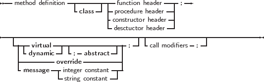

The prototype declaration of a class is as follows:
_________________________________________________________________________________________________________
Class types


___________________________________________________________________
Remark: In MacPas mode, the Object keyword is replaced by the class keyword for compatibility
with other pascal compilers available on the Mac. That means that in MacPas mode,
the reserved word ’class’ in the above diagram may be replaced by the reserved word
’object’.
In a class declaration, as many private, protected, published and public blocks as needed can
be used: the various blocks can be repeated, and there is no special order in which they must
appear.
Methods are normal function or procedure declarations. As can be seen, the declaration of a class
is almost identical to the declaration of an object. The real difference between objects and classes is
in the way they are created (see further in this chapter).
The visibility of the different sections is as follows:
-
Private
- All fields and methods that are in a private block, can only be accessed in the
module (i.e. unit) that contains the class definition. They can be accessed from inside
the classes’ methods or from outside them (e.g. from other classes’ methods)
-
Strict Private
- All fields and methods that are in a strict private block, can only be
accessed from methods of the class itself. Other classes or descendent classes (even in
the same unit) cannot access strict private members.
-
Protected
- Is the same as Private, except that the members of a Protected section are
also accessible to descendent types, even if they are implemented in other modules.
-
Strict Protected
- Is the same as Protected, except that the members of a Protected
section are also accessible to other classes implemented in the same unit. Strict
protected members are only visible to descendent classes, not to other classes in the
same unit.
-
Public
- sections are always accessible.
-
Published
- From a language perspective, this is the same as a Public section, but the
compiler generates also type information that is needed for automatic streaming of
these classes if the compiler is in the {$M+} state. Fields defined in a published section
must be of class type. Array properties cannot be in a published section.
In the syntax diagram, it can be seen that a class can list implemented interfaces. This feature will
be discussed in the next chapter.
Classes can contain Class methods: these are functions that do not require an instance. The Self
identifier is valid in such methods, but refers to the class pointer (the VMT).
Remark: Like with functions and pointer types, sometimes a forward definition of a class is needed. A class
forward definition is simply the name of the class, with the keyword Class, as in the following
example:
Type
TClassB = Class;
TClassA = Class
B : TClassB;
end;
TClassB = Class
A : TClassA;
end;
When using a class forward definition, the class must be defined in the same unit, in the same
section (interface/implementation). It must not necessarily be defined in the same type
section.
It is also possible to define class reference types:
_________________________________________________________________________________________________________
Class reference type
___________________________________________________________________
Class reference types are used to create instances of a certain class, which is not yet known at
compile time, but which is specified at run time. Essentially, a variable of a class reference type
contains a pointer to the definition of the speficied class. This can be used to construct an instance
of the class corresponding to the definition, or to check inheritance. The following example shows
how it works:
Type
TComponentClass = Class of TComponent;
Function CreateComponent(AClass: TComponentClass;
AOwner: TComponent): TComponent;
begin
// ...
Result:=AClass.Create(AOwner);
// ...
end;
This function can be passed a class reference of any class that descends from TComponent. The
following is a valid call:
Var
C : TComponent;
begin
C:=CreateComponent(TEdit,Form1);
end;
On return of the CreateComponent function, C will contain an instance of the class TEdit. Note
that the following call will fail to compile:
Var
C : TComponent;
begin
C:=CreateComponent(TStream,Form1);
end;
because TStream does not descend from TComponent, and AClass refers to a TComponent class.
The compiler can (and will) check this at compile time, and will produce an error.
References to classes can also be used to check inheritance:
TMinClass = Class of TMyClass;
TMaxClass = Class of TMyClassChild;
Function CheckObjectBetween(Instance : TObject) : boolean;
begin
If not (Instance is TMinClass)
or ((Instance is TMaxClass)
and (Instance.ClassType<>TMaxClass)) then
Raise Exception.Create(SomeError)
end;
The above example will raise an exception if the passed instance is not a descendent of TMinClass
or a descendent of TMaxClass.
More about instantiating a class can be found in section 6.3, page 297.